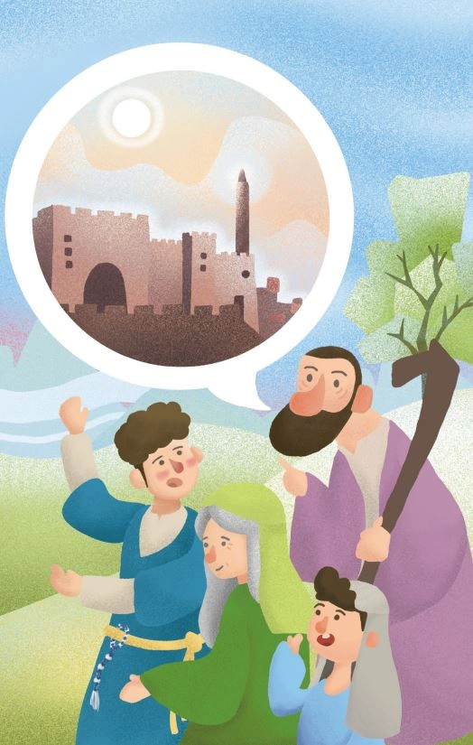

第2章

每年，吉安娜都會帶著以利雅薩從伯利恆上到示羅[1]，敬拜祭祀萬軍之耶和華。
今年也不例外，當鄰近亞筆月（大約3-4月份）時，母子二人就揹起早已經整理好的行囊，興致勃勃的起身前往示羅。
在那裡，有耶和華的大祭司亞比書，他會耐心的聆聽每一個人的需要，再進到會幕裡求問神；他會認真的傳講耶和華的話，讓以色列百姓更認識那位有著良善與恩典的唯一真神。
清風吹拂，高掛在空中的豔陽，不只照亮了整片大地，也照亮了正在前往示羅路上的每一個人的心裡。樹梢上的小鳥在歡快的歌唱，路邊的花兒在陽光的沐浴下隨風搖曳，以利雅薩嘴裡哼著歌，愉快的走在吉安娜身邊。
感受到身旁人的快樂，吉安娜忍不住開口讚美耶和華，開始頌揚以色列先祖被上帝拯救的歷程。
從小到大聽著母親講述這些故事長大的以利雅薩，在吉安娜才剛剛提起開頭，就順著她的話將後續的發展講了出來。
同行的路人看著眼前這位十五、六歲的少年，走在路上眉飛色舞的說著只屬於他們的歷史，頭頂上的烈日似乎也沒有此時此刻的以利雅薩光彩耀人。少年尚在變聲期的獨特嗓音，帶著眾人緩緩進入到他所描繪的故事當中，宛如眾人現在並不是在前往示羅的路上，而是跟著他們的先祖，正準備要過約旦河，進入神所應許流奶與蜜之地。
人群中有另外一位身著華麗衣裳的少年，大概是不滿只有以利雅薩一人在眾人面前閃耀，突然站了出來打斷對方的話：「喂，既然你懂得那麼多，那你知不知道在約書亞分地為業時，分別將庇護城「מִקְלָט」設立在哪裡嗎？」
偶然間聽到一個陌生的詞彙，以利雅薩轉頭看向吉安娜問道：「什麼是庇護城？」
還沒等吉安娜回答，提問少年就搶著先答道：「就是給那些誤殺人者躲避報血仇的地方啊！怎麼，你沒聽說過？」
以利雅薩搖了搖頭，接著問道：「那他們要怎麼知道誰是誤殺人者，誰是蓄意殺人者？」
看著以利雅薩困惑的表情，少年從中獲得了極大的成就感，抬著頭比手畫腳的將他所知道關於庇護城的事，全都說了一遍：「據說所有進入到庇護城裡的人，都會在會眾面前，由城裡的長老親自進行審判。最終，只有誤殺人者才能留在庇護城生活。」
以利雅薩心中不以為然：「怎麼可能會有誤殺人者的存在，如果沒有殺人的想法，那根本就不會做出有可能將人殺死的舉動啊！」帶著疑惑與不解，庇護城的意象逐漸開始在以利雅薩的腦海中生根發芽。
似是看出以利雅薩心中的想法，吉安娜開口叮囑道：「無論如何，我兒啊，你要謹記耶和華上帝的話語：『我是把你們從埃及地領出來的耶和華，要作你們的上帝；所以你們要聖潔，因為我是聖潔的。』[2]」
隨著以利雅薩一行人逐漸接近示羅，節期的歡樂氣氛也逐漸濃厚起來，路上處處都充滿著讚美的歌聲：
耶和華啊，王必因你的能力歡喜；
因你的救恩，他的快樂何其大！
......耶和華啊，願你因自己的能力顯為至高，
這樣，我們就唱詩歌頌你的大能......
Ashira I'adonai; ki gaoh ga-ah;
Ashira I'adonai; ki gaoh ga-ah;
אָשִׁירָה לַיהוָה כִּי-גָאֹה גָּאָה
I sing to Jehovah, For triumphing He hath triumphed.
（我要向耶和華歌唱，因他大大戰勝。）
Mi-cha-mo-cha ba-e-lim adonai
Mi kamocha nedar ba kodesh;
מִי-כָמֹכָה בָּאֵלִם יְהוָה
מִי-כָמֹכָה נֶאְדָּר בַּקֹּדֶשׁ
Who is like Thee among the gods, O Jehovah? Who is like Thee -- honourable in holiness?
耶和華啊,眾神之中誰能像你？
誰能像你至聖至榮？
Nachita v'chas-d'-cha am zu ga-alta
Nachita v'chas-d'-cha am zu ga-alta
נָחִיתָ בְחַסְדְּךָ, עַם-זוּ גָּאָלְתָּ
Thou hast led forth in Thy kindness The people whom Thou hast redeemed.
你憑慈愛領了你所贖的百姓。
Ashira, ashira, Ashira
Ashira I'adonai; ki gaoh ga-ah;
Ashira I'adonai; ki gaoh ga-ah;
Mi chamocha baelim adonai;
Mi kamocha nedar ba kodesh;
Nachita v'-chas-d'cha am zu ga-alta
Nachita v'-chas-d'cha am zu ga-alta
Ashira, ashira, Ashira[3]
在逾越節的祭牲，也就成了盛筵的來源，眾人都飽足一頓，一連七日彼此餽贈和賜福，因為他們知道這一切蒙福所得，都是來自耶和華上帝的賜予。
此時，以利雅薩心中仍不斷的回想著路上關於庇護城的種種猜測。望著遠處大祭司亞比書剛換身衣服，走入宴席與眾人一起分享逾越節的歡愉，以利雅薩深吸一口氣，鼓起了勇氣走上前去，向亞比書問道：「真有庇護城這事嗎？」
看著面前這雙烏黑透亮的眼睛，裡面有茫然，有困惑，更又一絲可能連少年自己都不清楚的冀望，亞比書點了點頭笑著回應：「庇護城是耶和華上帝對人尊重與疼惜心意的具體落實，它維持應許地的聖潔，並且提供了三種保護：它保護誤殺者的性命得以存活、也保護報血仇的避免流了無辜人的血、更保護應許之地免於污染。庇護城條例不單是針對以色列人，也針對外邦人和寄居者。也就是說，若外邦人誤殺了以色列人，庇護城也要成為這位外邦人的保護[4]。所以不管身分地位如何，家裡住在何地，上帝都會保守看顧我們！」
隨著過節的日子結束，母子倆重新踏上回程的旅途。
吉安娜舉目看向在空中盤旋而上的老鷹：「我兒啊！上帝對我們的愛和恩典是無窮無盡的，就像如鷹攪動巢窩，在雛鷹以上兩翅搧展，接取雛鷹，背在兩翼之上。上帝必定也會幫助你的，使你的生命能處在地的高處，得吃田間的土產；又有蜜可吸取。[5]」
以利雅薩想起前幾天與亞比書的對話，挺直背脊仰頭向上帝發出祈禱：「耶和華上帝啊！求祢光照我們，不要忘記窮苦人。」無形之中，以利雅薩的心房點燃了一盞小燈，在漫漫人生長路，有了上帝的幫助，原本有如一葉扁舟在內心汪洋漂流的孤單感，又重新有了追尋的力量。
[1] 「示羅」：是當時會幕所在地，在約櫃未被擄去之前，是以色列人敬拜的中心。根據摩西律法，以色列人每年最少三次向耶和華守節。
[2] 利未記十一章45節。
[4] 申命記十九章1-13節。
[5] 申命記三十二章10-13節。